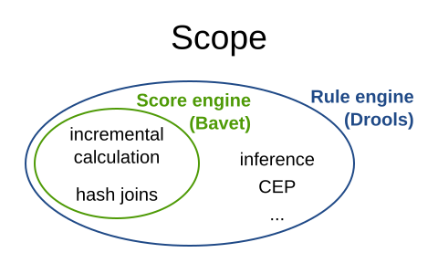
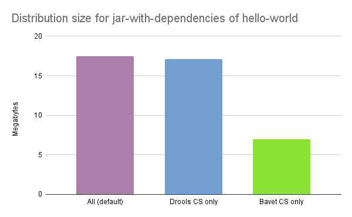

Bavet – A faster score engine for OptaPlanner
Drools is an extremely fast rule engine.
Under the hood, OptaPlanner has used Drools as a score engine for ages.
Today, we’re announcing a faster, lightweight alternative: Bavet.
Bavet is a feature of OptaPlanner. It is not a rule engine.
It is a pure, single-purpose, incremental score calculation implementation
of the ConstraintStreams API.
Bavet is feature complete as of OptaPlanner 8.27.0.Final.
You can switch from Drools to Bavet in a single line of code.
Twice as fast score calculation. Zero API changes.
Faster
For 20 diverse use cases, we compared Bavet and Drools for OptaPlanner score calculation.
We ran JMH benchmarks
on OpenJDK 17 (ParallelGC, Xmx1G)
on a stable benchmark machine (Intel® Xeon® Silver (12 cores total / 24 threads) and 128 GiB RAM memory)
without any other computational demanding processes running.
On average, Bavet is twice as fast as Drools for score calculation.
In the Vehicle Routing Problem,
Bavet is even three times as fast as Drools:
| Use case | Drools | Bavet | Speed up |
|---|---|---|---|
cheaptime | 4,349 | 14,543 | +234% |
cloudbalancing | 162,820 | 608,204 | +274% |
coachShuttleGathering | 38,543 | 111,991 | +191% |
conferenceScheduling | 1,072 | 1,264 | +18% |
curriculumCourse | 32,272 | 38,933 | +21% |
examination | 11,821 | 25,712 | +118% |
flightCrewScheduling | 97,020 | 126,563 | +30% |
investment | 68,935 | 401,806 | +483% |
machineReassignment | 13,384 | 28,619 | +114% |
meetingscheduling | 2,291 | 2,158 | -6% |
nQueens | 177,528 | 285,268 | +61% |
nurserostering | 10,657 | 21,090 | +98% |
pas | 50,971 | 47,551 | -7% |
projectjobscheduling | 23,715 | 78,291 | +230% |
rockTour | 33,997 | 152,472 | +348% |
taskAssigning | 10,531 | 20,680 | +96% |
tennis | 106,172 | 236,437 | +123% |
travelingtournament | 49,428 | 77,143 | +56% |
tsp | 169,125 | 430,384 | +154% |
vehicleRouting | 8,247 | 26,187 | +218% |
Average: | 53,644 | 136,765 | +132% |
Bavet is faster than Drools for 90% of the use cases.
Of course, your mileage may vary.
Turn on Bavet and if it’s not faster in your use case, let us know.
Drools and Bavet are both still improving.
This performance race is far from over.
Scaling
Does Bavet scale well?
On commodity hardware, we ran a 5 minutes VRP benchmark on different dataset sizes,
to compare how Drools and Bavet scale up:
| belgium-n50-k10 | belgium-n100-k10 | belgium-n500-k20 | belgium-n1000-k20 | belgium-n2750-k55 | Average | |
|---|---|---|---|---|---|---|
Drools | 76,919/s | 58,365/s | 36,609/s | 23,394/s | 29,770/s | 45,011/s |
Bavet | 307,290/s | 242,400/s | 147,595/s | 89,850/s | 91,115/s | 175,650/s |
Speed up | +299.50% | +315.32% | +303.17% | +284.07% | +206.06% | +290.24% |
Same story, but the performance gap does close as the scale goes up.
Not a rule engine
Bavet is not a rule engine.
It deliberately doesn’t support inference, nor Complex Event Processing (CEP),
nor other common business rule engine features:

OptaPlanner only requires a score engine.
Its Drools implementation only uses a small subset of Drools’s features.
Bavet on the other hand, is a score engine tailored to OptaPlanner.
It’s part of OptaPlanner. It has no use outside of OptaPlanner.
For incremental score calculation, Bavet borrows techniques from the RETE algorithm
and Drools’s Phreak algorithm.
For example, the JoinNode in Bavet
contains insert(), update() and retract() methods.
But below the surface, it’s a very different implementation.
Compare it with the method signatures of similar methods in the JoinNode in Drools.
History and naming
I created Bavet as a POC in 2019
and added it into OptaPlanner as an experimental, fast, incomplete feature.
There it sat frozen. For 3 years.
Until recently, when Lukáš Petrovický and me completed all missing features
and refactored it to the performance sensation is today.
Naming wise, bavet is a Flemish (Dutch) slang word for a bib.
Very useful if your baby is drooling.
I came up with that name when we were eating with our kids at a spaghetti restaurant called Bavet,
while facing this mural:
Ok, maybe I didn’t put much effort into that.
But it doesn’t really need a good name.
It’s just one of OptaPlanner’s score calculation options.
An implementation detail, really.
Stability
We believe Bavet is very stable.
We successfully run our 48+ hours stress tests on Bavet regularly.
These stress tests stomp out score corruption by solving a lot of datasets across many use cases.
More lightweight
In OpenShift and Kubernetes clouds, the size of pods matter.
By using Bavet, you can slim down OptaPlanner’s classpath
to exclude the Drools dependencies.
The Bavet jar is 400 KB.
On the OptaPlanner hello-world quickstart,
a Maven assembly of jar-with-dependencies with only Bavet included is 10 MB smaller:

| Core dependencies | Size | Reduction | Core exclusions |
|---|---|---|---|
All (default) | 17.5 MB | 0% | none |
Drools CS only | 17.1 MB | -2% |
|
Bavet CS only | 7.0 MB | -60% |
|
By default, optaplanner-core includes both Drools and Bavet,
so you have to explicitly exclude it in Maven or Gradle:
org.optaplanner
optaplanner-core
org.optaplanner
optaplanner-constraint-drl
org.optaplanner
optaplanner-constraint-streams-drools
This reduces optaplanner-core from 42 to 17 transitive dependencies.
Specifically, all these jars are removed from your classpath:
- org.optaplanner:optaplanner-constraint-streams-drools:...
+- org.drools:drools-engine:...
| +- org.kie:kie-api:...
| +- org.kie:kie-internal:...
| +- org.drools:drools-core:...
| | +- org.kie:kie-util-xml:...
| | +- org.drools:drools-wiring-api:...
| | +- org.drools:drools-wiring-static:...
| | +- org.drools:drools-util:...
| | - commons-codec:commons-codec:...
| +- org.drools:drools-wiring-dynamic:...
| +- org.drools:drools-kiesession:...
| +- org.drools:drools-tms:...
| +- org.drools:drools-compiler:...
| | +- org.drools:drools-drl-parser:...
| | +- org.drools:drools-drl-extensions:...
| | +- org.drools:drools-drl-ast:...
| | +- org.kie:kie-memory-compiler:...
| | +- org.drools:drools-ecj:...
| | +- org.kie:kie-util-maven-support:...
| | - org.antlr:antlr-runtime:...
| +- org.drools:drools-model-compiler:...
| | - org.drools:drools-canonical-model:...
| - org.drools:drools-model-codegen:...
| +- org.drools:drools-codegen-common:...
| +- com.github.javaparser:javaparser-core:...
| +- org.drools:drools-mvel-parser:...
| - org.drools:drools-mvel-compiler:...
- org.drools:drools-alphanetwork-compiler:...Bavet (optaplanner-constraint-streams-bavet) has no transitive dependencies
(except for optaplanner-constraint-streams-common).
Try it out
First upgrade to OptaPlanner 8.27.0.Final or later, if you haven’t already.
If you’re using the deprecated scoreDRL approach, migrate from scoreDRL to constraint streams first.
By default, OptaPlanner still uses Drools for constraint streams.
To use Bavet instead, explicitly switch the ConstraintStreamImplType to BAVET:
Plain Java
Switch to Bavet in either your *.java file:
SolverFactory solverFactory = SolverFactory.create(new SolverConfig()
...
.withConstraintStreamImplType(ConstraintStreamImplType.BAVET)
...); or in your solverConfig.xml:
...
BAVET
Quarkus
Switch to Bavet in src/main/resources/application.properties:
quarkus.optaplanner.solver.constraintStreamImplType=BAVETSpring
Switch to Bavet in src/main/resources/application.properties:
optaplanner.solver.constraintStreamImplType=BAVETShare your results
Help us out. Try Bavet and let us know here
how your score calculation speed changes.
Look for the score calculation speed in the INFO log: it’s part of the Solving ended message.
Red Hat support
A Red Hat support subscription will not offer support for Bavet.
Drools intends to catch up performance wise.
“)